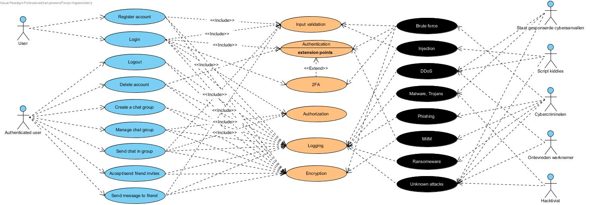

Threat analysis
Deze pagina beschrijft de threat analyse. Hier kijk ik naar wat voor veelvoorkomende threats er zijn en welke relevant zijn binnen mijn applicatie.
Het is belangrijk om te weten met wat voor soort aanvalstechnieken we te maken hebben. Hiervoor zijn er een aantal van de veelvoorkomende aanvallen op een rijtje gezet. Veelvoorkomende aanvallen binnen de cyber wereld zijn onder andere:
Ieder jaar komen er weer nieuwe cyberaanval-technieken aan en dus kan deze lijst vaak veranderen. Omdat deze nu momenteel nog onbekend zijn, vallen deze onder de ‘unknown attacks/zero-days’. Hierop kun je moeilijk anticiperen. Mogelijk is het beste wat daartegen te doen is, is het loggen en monitoren van ongebruikelijk of vreemd gedrag binnen een applicatie wat niet onder te brengen is onder een van de bekendere technieken.
Het is ook belangrijk om de veelvoorkomende kwaadwillende actoren in kaart te brengen. Veelvoorkomende kwaadwillende actoren binnen de cyber wereld zijn de volgende:
Veel van deze actoren voeren niet altijd dezelfde aanvallen uit. Veel aanvallen zijn gekoppeld aan een soort actor. Om dit in beeld te kunnen brengen, is het makkelijk om een tabel te maken met hierin welke actor welke type aanval vaak uitvoert, en wat hun motivatie daarbij is.
| Threat actor | Motivatie | Misuse activiteiten |
|---|---|---|
| Staat gesponseerde cyberaanvallen | Economie verbeteren van eigen land | DDoS, Malware, Trojans, unknown attacks |
| Script kiddies | Leren en uitproberen van hacken | DDoS, Injection, unknown attacks |
| Cybercriminelen | Geld verdienen | Ransomware, Brute force, MitM, Phishing, unknown attacks |
| Ontevreden werknemers | Wraak | DDoS, unknown attacks |
| Hacktivisten | Politieke aandacht trekken | Malware, Trojans, unknown attacks/zero-days |
Tabel 1 Threat actoren met motivatie
Nu we weten met wat voor soort actoren te maken kunnen hebben, is het mogelijk om een misuse case diagram te maken voor mijn applicatie.
Afbeelding 1 Misuse case diagram